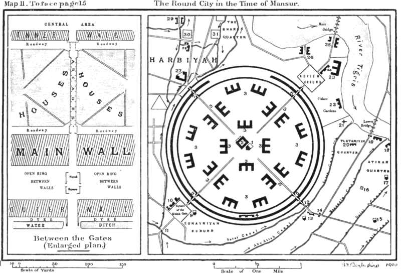
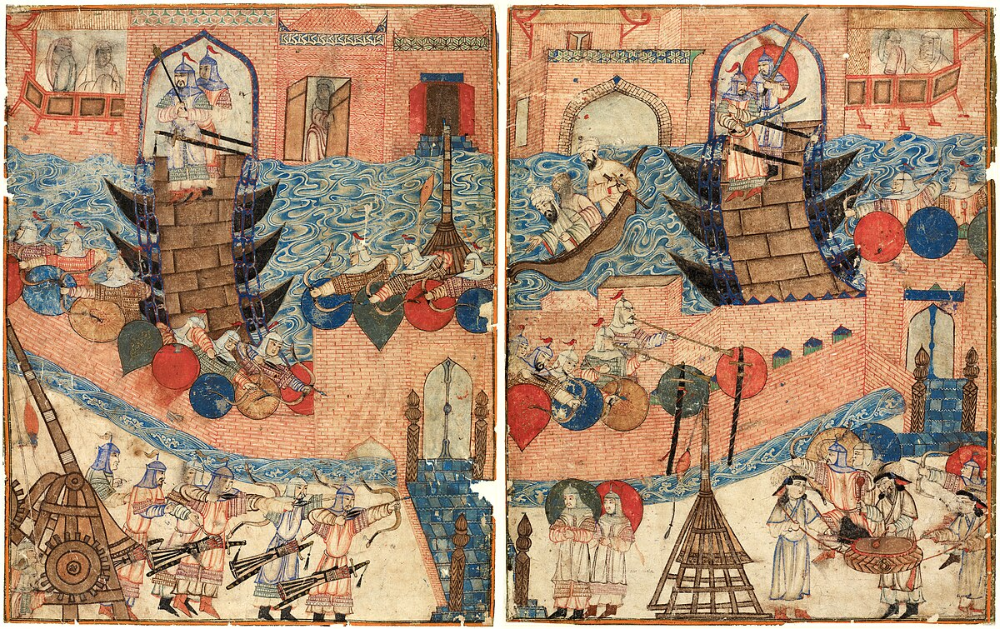
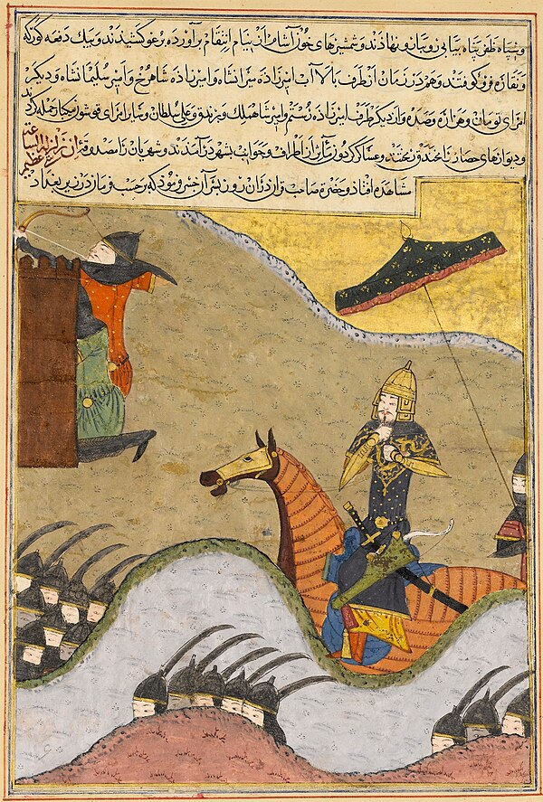
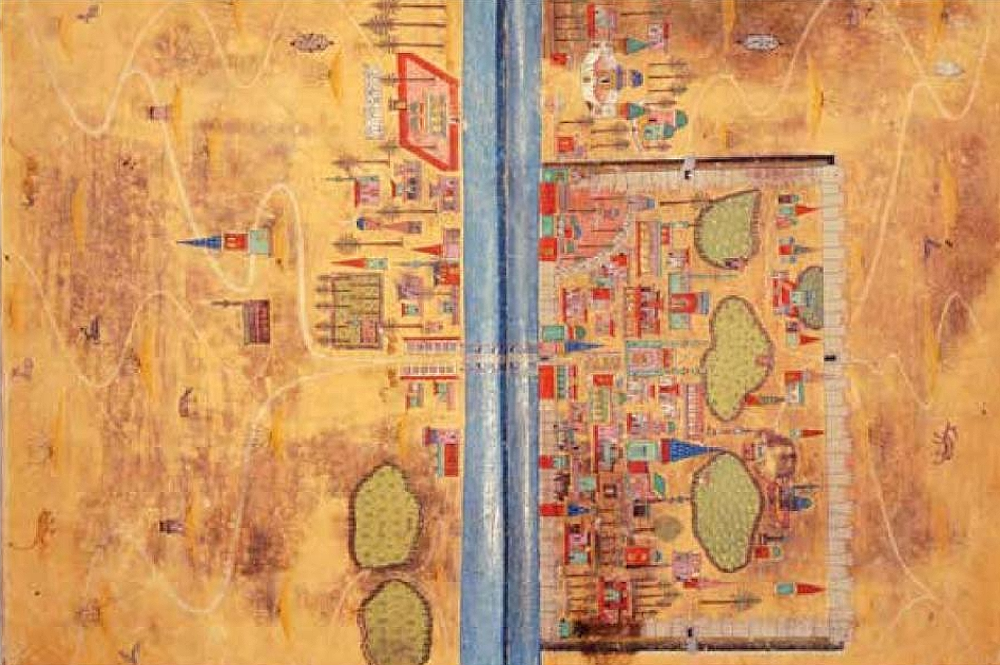
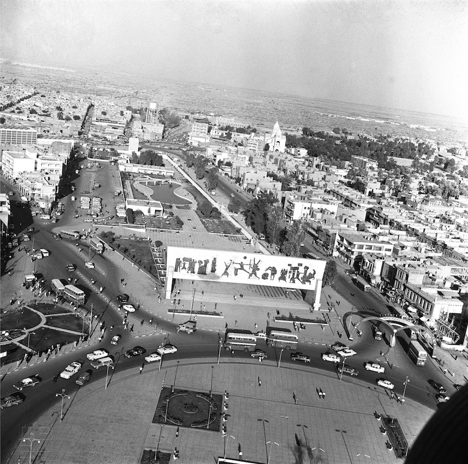

{kind=link}

The Round City
762 AD
Founded by Caliph al-Mansur, the "City of Peace" (Madinat al-Salam) was a marvel of urban planning. Designed as a perfect circle with four massive gates pointing towards Basra, Kufa, Khurasan, and Syria. The caliph's Golden Gate Palace and the Grand Mosque sat in the pristine, uncrowded center.
{kind=link}
{kind=link}

The Mongol Siege
1258
A devastating turning point. Hulagu Khan's forces breached the city walls. Centuries of accumulated knowledge were destroyed. Legend says the Tigris River ran black with the ink of countless books thrown from the grand libraries, and red with the blood of the city's inhabitants. The Abbasid Caliphate collapsed.
{kind=link}

Stagnation & Invasions
1258 – 1534
Baghdad entered a dark age, reduced to a provincial town. It was briefly rebuilt under Ilkhanid rule, only to be violently sacked again by Timur in 1401. The city spent centuries passing between competing Turkic federations and the early Safavid Empire, struggling to recover its former glory.
{kind=link}

Ottoman Rule
1534 – 1918
Captured by Suleiman the Magnificent, Baghdad was integrated into the Ottoman Empire. While largely a neglected provincial outpost for centuries, the late Ottoman period saw a revival. Traditional brick houses with wooden shanashil (balconies) lined the alleys, and bustling souqs re-established its trading roots.
{kind=link}

Modern Era
1920 – Present
Following the British Mandate and the establishment of the Kingdom, Baghdad expanded rapidly. Al-Rashid Street became the modern heart. Through the establishment of the Republic in 1958, subsequent oil booms, tragic conflicts, and recent recovery, the city's skyline transformed with modern monuments like Jawad Saleem's Freedom Monument, reflecting the eternal resilience of its people.